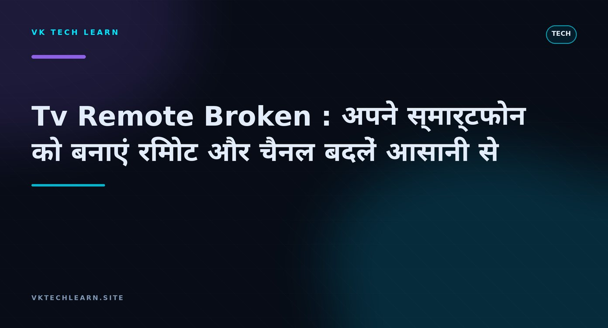

Tv Remote Broken : अपने स्मार्टफोन को बनाएं रिमोट और चैनल बदलें आसानी से
TV Remote Broken : अपने स्मार्टफोन को बनाएं रिमोट और चैनल बदलें आसानी से
टीवी या स्मार्ट टीवी यूजर्स के साथ अक्सर ऐसा होता है कि टीवी रिमोट अचानक काम करना बंद कर देता है। कभी बैटरी खत्म हो जाती है, कभी ब्लूटूथ पेयरिंग टूट जाती है, और कई बार रिमोट पूरी तरह डेड हो जाता है। ऐसे में ज्यादातर लोग फौरन मैकेनिक बुला लेते हैं या नया रिमोट खरीदने चले जाते हैं।

लेकिन अब ऐसा करने की जरूरत नहीं है। अगर आपका टीवी रिमोट खराब हो गया है, तो आप अपने स्मार्टफोन को रिमोट की तरह इस्तेमाल कर सकते हैं और चैनल बदल सकते हैं, वॉल्यूम कंट्रोल कर सकते हैं और टीवी को ऑन-ऑफ भी कर सकते हैं।
स्मार्टफोन से टीवी कंट्रोल करने के तरीके
1. TV Remote Apps
लगभग हर बड़े स्मार्ट टीवी ब्रांड जैसे Samsung, LG, Mi, OnePlus, Sony आदि की अपनी आधिकारिक ऐप्स मौजूद हैं।
- Google Play Store या App Store से अपने टीवी ब्रांड की ऐप डाउनलोड करें।
- अपने टीवी को उसी Wi-Fi नेटवर्क से कनेक्ट करें जिस पर आपका फोन कनेक्ट है।
- अब ऐप को टीवी से पेयर करें और चैनल बदलना, वॉल्यूम कंट्रोल करना, इनपुट स्विच करना जैसे सारे फंक्शन इस्तेमाल करें।
2. IR Blaster वाले फोन
कुछ स्मार्टफोन जैसे Xiaomi, Poco, Huawei, Redmi आदि में IR Blaster फीचर मौजूद होता है।
- IR Blaster के जरिए फोन सीधे टीवी को कंट्रोल कर सकता है।
- इसके लिए किसी इंटरनेट या Wi-Fi की जरूरत नहीं होती।
- बस फोन में मौजूद Universal Remote फीचर खोलें और टीवी ब्रांड चुनें।
- अब फोन के जरिए चैनल, वॉल्यूम या पावर कंट्रोल करें।
3. Universal Remote Apps
अगर आपके फोन में IR Blaster नहीं है, तब भी आप Universal Remote Apps का इस्तेमाल कर सकते हैं।
- Google Play Store या App Store में “Universal Remote” सर्च करें।
- जैसे – Universal TV Remote Control, AnyMote, Mi Remote Controller आदि।
- इन ऐप्स को Wi-Fi या ब्लूटूथ के जरिए अपने टीवी से कनेक्ट करें।
- कनेक्ट होने के बाद ऐप पूरी तरह रिमोट की तरह काम करता है।
4. Casting या Screen Mirroring फीचर
अगर आपका टीवी Smart TV है, तो आप Cast या Screen Mirror फीचर के जरिए अपने फोन को रिमोट की तरह इस्तेमाल कर सकते हैं।
- अपने फोन और टीवी दोनों को एक ही Wi-Fi नेटवर्क पर कनेक्ट करें।
- फोन में Cast या Smart View फीचर चालू करें।
- अब आपका फोन टीवी को नियंत्रित करेगा और आप स्क्रीन पर जो भी करेंगे, वह टीवी पर दिखेगा।
महत्वपूर्ण टिप्स
- हमेशा टीवी और फोन को एक ही Wi-Fi नेटवर्क से कनेक्ट रखें।
- ब्रांड की आधिकारिक ऐप्स इस्तेमाल करें ताकि पेयरिंग और सुरक्षा बेहतर बनी रहे।
- अगर आपका रिमोट बार-बार खराब हो रहा है, तो स्मार्टफोन रिमोट एक बेहतर और सुरक्षित विकल्प है।
निष्कर्ष
अगर आपका टीवी रिमोट खराब हो गया है, तो अब परेशान होने की जरूरत नहीं। स्मार्टफोन की मदद से आप अपने टीवी को कंट्रोल कर सकते हैं — चाहे वो चैनल बदलना हो, वॉल्यूम एडजस्ट करना हो या ऐप ओपन करना। सही ऐप या फीचर का इस्तेमाल करके आप कुछ ही मिनटों में अपने फोन को स्मार्ट टीवी रिमोट में बदल सकते हैं।
#TVRemote #SmartphoneTips #SmartTV #TechNews #TVControl #IRBlaster #UniversalRemote #DigitalIndia #MiRemote #PhoneAsRemote